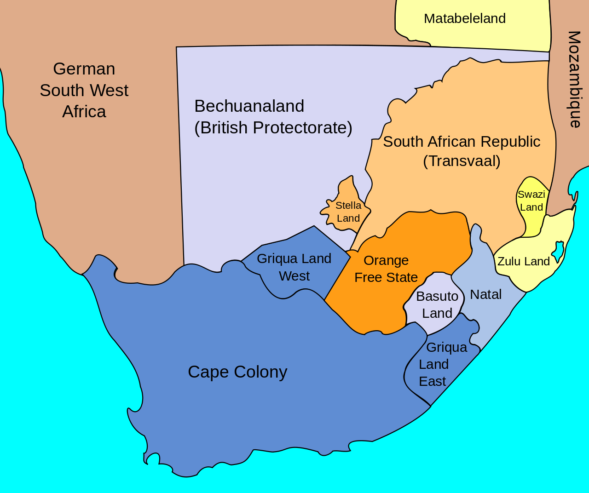

Second Boer War
October 11th 1899 – May 31st 1902
The 2nd Boer War was a revolt in Southern Africa led by mainly peasant farmers aganist British colonial rule. The Boer created their own While the war techincally ended in 1902 the war was practically over in 1900 once the british started taking the rebels seriously. Many of the free countries in South Africa helped out the Boers and were then annexed by the British.
Picture below is territory right before the war began
